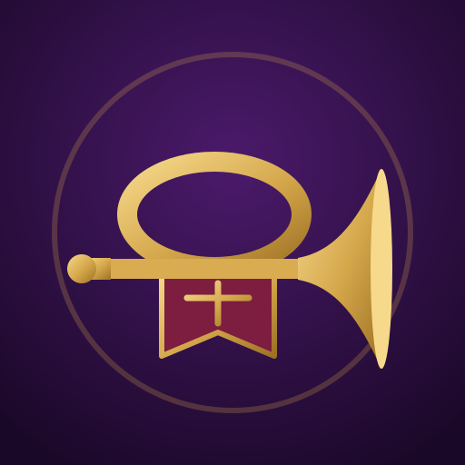

Toca la corneta mientras pasa la banda
Acércate a la banda y deja que escuche: para sola en cuanto la reconoce (máx. 20 s).
Historial
Aún no has reconocido ninguna marcha.

Toca la corneta mientras pasa la banda
Acércate a la banda y deja que escuche: para sola en cuanto la reconoce (máx. 20 s).
Aún no has reconocido ninguna marcha.